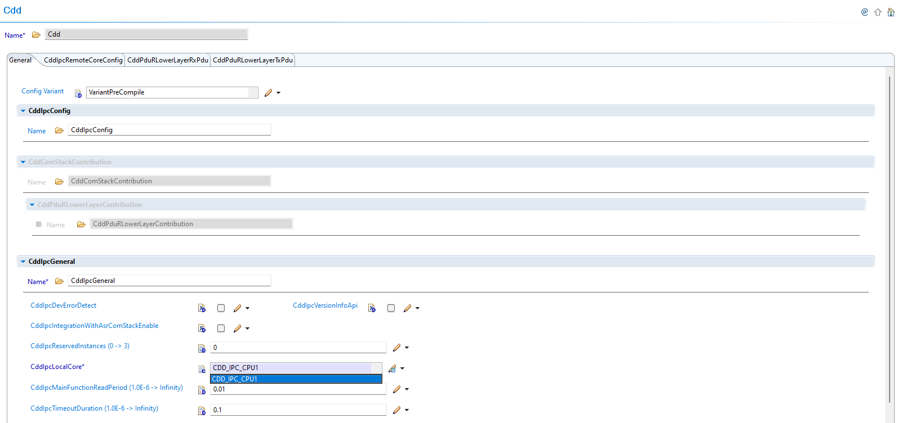
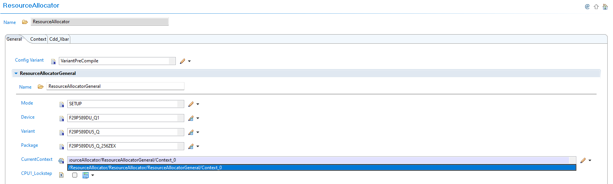
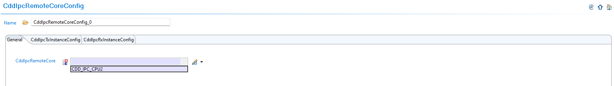
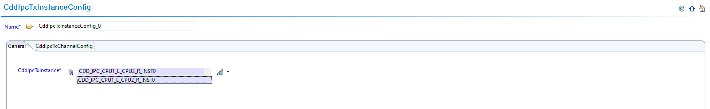

6.12. CDD IPC Module Migration
Migration Approach: Follow sequential migration for clear understanding of changes at each version. Each migration is organized by individual changes with description, old vs new comparison, and migration actions.
6.12.1. v02.00.00 (i.e release v01.04.00) from v01.00.02 (i.e release v01.03.00) Migration
6.12.1.1. Summary
Version v02.00.00 introduces Resource Allocator as a mandatory architectural foundation and local core context centralization. This represents a fundamental shift from direct parameter configuration to centralized resource management:
Resource Allocator Introduction with Local Core Context Centralization: Resource Allocator becomes mandatory with local core context moved from CDD IPC to Resource Allocator
Configuration Filtering Updates: Remote core and instance options automatically filtered based on Resource Allocator context
PREREQUISITE: Complete Resource Allocator Setup before proceeding.
6.12.1.2. Change 1: Resource Allocator Introduction with Local Core Context Centralization
6.12.1.2.1. Description
Resource Allocator becomes a mandatory architectural foundation for the CDD IPC module with local core context centralization. The local core context is moved from CDD IPC module configuration to the Resource Allocator CurrentContext parameter, providing centralized context management across all modules.
6.12.1.2.2. Old vs New Configuration
Previous Configuration (v01.00.02): Local core context was set directly within CDD IPC module configuration.
{kind=link}

Fig. 6.53 v01.00.02: Local core context was set directly within CDD IPC module configuration
New Configuration (v02.00.00): Context is now centralized in Resource Allocator, replacing direct IPC context configuration.
{kind=link}

Fig. 6.54 v02.00.00: Context is now set in Resource Allocator, replacing direct IPC context configuration
6.12.1.2.3. Migration Actions
Setup Resource Allocator: Follow Resource Allocator Setup
Configure Local Core Context: Navigate to ResourceAllocatorGeneral → General and configure the CurrentContext parameter to specify your local core
Remove Direct IPC Context: The local core context configuration is no longer available within the CDD IPC module - it is now automatically determined from Resource Allocator
Verify Context Integration: Ensure the Resource Allocator CurrentContext parameter correctly reflects your local core configuration
6.12.1.3. Change 2: Configuration Filtering Updates
6.12.1.3.1. Description
Version v02.00.00 introduces automatic configuration filtering where remote core options and TX/RX instance selections are automatically filtered based on the local core context from Resource Allocator. This eliminates invalid configuration combinations and ensures context consistency.
6.12.1.3.2. Old vs New Configuration Filtering
Previous Configuration (v01.00.02): Remote core selection and TX/RX instances were configured directly without context-based filtering.
New Configuration (v02.00.00): Remote core options and instance selections are automatically filtered based on Resource Allocator context.
6.12.1.3.3. Migration Actions
Verify Remote Core Filtering: Navigate to CDD IPC configuration and observe that remote core options are automatically filtered based on Resource Allocator context:
{kind=link}

Fig. 6.55 Remote core options are automatically filtered based on Resource Allocator context
Review TX/RX Instance Filtering: Verify that CddIpcTxInstance and CddIpcRxInstance options are automatically filtered based on local core context:
{kind=link}

Fig. 6.56 CddIpcTxInstance and CddIpcRxInstance options are automatically filtered based on local core context from Resource Allocator
Configure Valid Options: Select remote core and TX/RX instances from the automatically filtered options that are valid for your local core context
Validate Configuration: Ensure all selected configurations are compatible with the context-based filtering rules
Configuration Benefits:
Automatic filtering eliminates invalid configuration combinations
Context consistency ensured across Resource Allocator and CDD IPC modules
Simplified configuration process with reduced manual validation requirements
Note
The Resource Allocator module must be configured before the CDD IPC module to ensure correct context-based filtering. Local core selection is now automatically determined based on the CurrentContext parameter configured in the Resource Allocator.